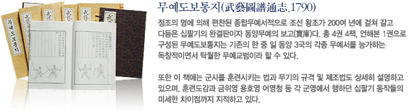
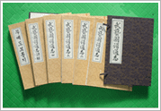
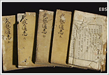
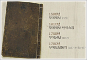

 |
정조는 이 책의 서문을 직접 적었는데, 십팔기에 대한 자신감을 “조선의 무인들이 십팔기를 익혀 날쌘 짐승과 같은 무사가 되길 바란다”는 말로 표현하기도 했다.
또한, 정조는 서문에서 십팔기의 명칭이 사도세자 뜻에 의해 정해진 조선 무예의 공식 명칭임을 분명히 밝히고 있다. (在顯隆園志 而十八技之名始此)
정조는 십팔기와 무예도보통지를 전 군영에 보급하여 무예 훈련을 독려하였으며, 특히 자신의 친위부대이자 최대 군영이었던 장용영엔 부대 명칭을 아예 십팔기군(十八技軍)과 능기군(能技軍 : 십팔기에 능한 직업군인)으로 편성하였다.
무예도보통지의 구성은 다음과 같다.
|
| 구성 |
분류기준 |
내용 |
|
| 권수(卷首) |
|
범례 병기총서 척모사실 기예질의 인용서목 |
| 권 1 |
찌르기(刺) |
장창 죽장창 기창(旗槍) 당파 기창(騎槍) 낭선 |
| 권 2, 권 3 |
찍어 베기(砍) |
쌍수도 예도 왜검 교전 제독검 본국검 쌍검
마상쌍검 월도 마상월도 협도 등패 |
| 권 4 |
치기(擊) |
권법 곤봉 편곤 마상편곤 격구 마상재 |
|
| |
| 위의 기예 중에서 마상재와 격구는 무예신보 이후 새로이 추가된 것으로, 무예의 범주에 들어가지는 않지만, 기병 훈련의 일환으로 덧붙였다.
무예도보통지의 독창성과 우수성은 다음과 같다. |
| |
 |
 |
 |
|
| |
|
무예도보통지는 우리 무예와 중국 일본의 무예 차이를 명확히 구별하고 있다. 각 기예의 연원을 밝히고 이들이 어떻게 전해졌는지, 그리고 어떻게 우리 무예로 전승 혹은 토착화 되었는지 분명히 밝히고 있다.
또한 한 중 일 3국의 무기를 대조해 보여줌으로써 무기의 차별화와 이에 따른 기예의 차별화를 보여주고 있다. |
| |
|
무예도보통지는 무예의 개별 동작(초식 혹은 세)에 대한 설명뿐만 아니라 이들 동작 전체를 연결하고 있는 총보(總譜)와 총도(總圖)를 함께 수록함으로써 전체적인 움직임을 이해하기 쉽도록 하고 있다.
기예를 펼치는 무인의 동선을 구체적인 그림과 선으로 보여주는 총도는 일종의 동영상 개념으로 고금의 무예서를 통틀어 찾아보기 힘든 혁신적인 아이디어다. 또한 세명(勢名)과 더불어 각 초식들의 연결 동작들을 상세히 풀이하여 한문과 언문으로 동시에 제시하여 장졸들이 쉽게 기예를 익힐 수 있도록 하고 있다. |
| |
|
무예도보통지는 국가적인 사업으로 진행된 작업으로 이전의 동양 무예의 성과를 총정리하고 집대성한 걸작품이다. 이덕무 박제가 백동수 등 당대의 최고 실학자들이 편찬에 참여한 이 책엔 방대한 무예 사료뿐만 아니라 무예 외적인 서체, 그림, 복식, 언어 등 조선 후기 화려하게 꽃피웠던 문화적 성취를 고스란히 반영하고 있다.
개인이나 한 문중이 아닌 국가가 나서 집대성한 무예는 십팔기가 유일하다. |